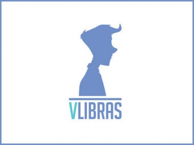

Libras
Para ter acesso ao conteúdo em Libras, sugerimos a instalação da extensão VLibras em seu navegador ou sistema operacional.
Maiores informações sobre este complemento, siga o link abaixo:
 Card Title
Card Title
I am a very simple card. I am good at containing small bits of information. I am convenient because I require little markup to use effectively.
Card Title
I am a very simple card. I am good at containing small bits of information. I am convenient because I require little markup to use effectively.